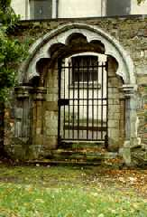
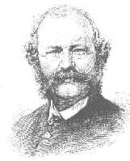

|  | A Sacred site:The site of St. Fin Barre's cathedral has been a place of worship since the 7th century, and the school founded by him there continued to be listed among the five principal monastic schools of Ireland down to the 10th century. No trace of the early foundation remains, except for the cemetery in which he was buried, a site marked by the present cathedral and a succession of previous buildings. The Medieval Cathedral: Few traces remain of the medieval buildings, though entries in the chapter minute books give some idea of its size and appearance. A square stone font, some carved heads, a piscina, and a carved doorway (now inserted in the south boundary wall: see adjacent) are from the period. The communion vessels, still in use, include a silver gilt chalice of 1536 and a silver chalice and patens made by the Cork Huguenot goldsmith Robert Goble in 1712. The cathedral suffered exceeding damage in the siege of Cork in 1689/90 when it came under fire from the nearby Elizabeth Fort. When the steeple was demolished in1865 a 24-pound cannon was discovered imbedded deep in the masonry. It now hangs from a chain in the ambulatory. |
The foundation stone of a new building was laid in 1735 by Bishop Peter Browne. It was a small plain classical building which incorporated the tower and spire of the previous cathedral. In 1865 it was demolished because it was felt to be inadequate to the dignity of a cathedral and the size of the diocese. The fine entrance gate to the 18th century cathedral still stands.
 Willliam Burges (1827 - 1881) was appointed architect for a new cathedral in 1862, after a competition for which there were 63 entries. Among the requirements of the competition was that the cost of the building should not exceed £15,000 and Burges was criticised by other architects because the cost of the towers, spires and carving was not included in his estimate. In the end some £100,000 was spent on the building. In 1865 the foundation stone was laid by Bishop John Gregg and on St. Andrew's Day,1870, the building was consecrated. The towers and spires were not completed until 1879. The cathedral is built of Cork limestone and the interior of Bath stone and the walls are lined with red Cork marble. As well as St. Fin Barre's Cathedral, Burges also designed the church in Crosshaven and an addition to the church at Carrigrohane. Burges drew up an overall iconographic scheme for the cathedral windows, and maintained control over all the stages of the work. He also designed all the sculpture, mosaics, furniture and metalwork. Thus the Cathedral preserves a remarkable unity of style throughout. The Resurrection Angel on the pinnacle of the sanctuary roof was a gift from Burges to the Cathedral. It is made from copper and covered with gold leaf.
| |BACK - Fin Barre - Family Background: | NEXT - St Anne's Shandon: | |